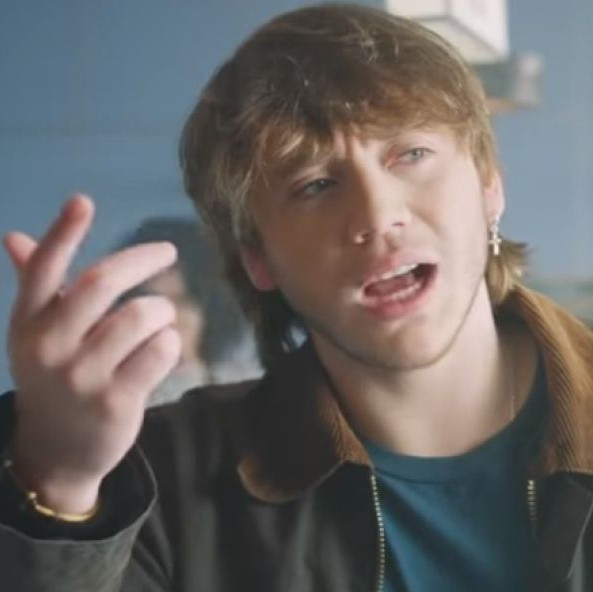
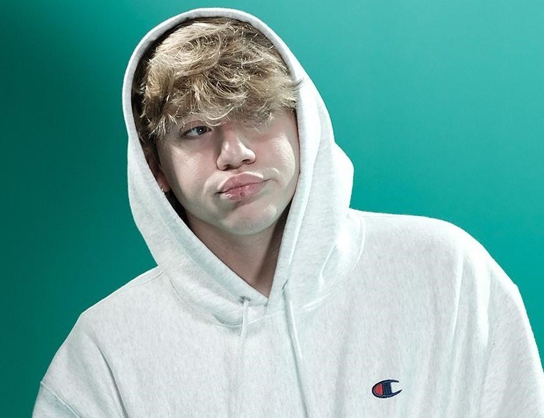

NACIMIENTO
Paulo Londra es un cantante y compositor argentino de Rap y Trap, nacido en la ciudad de Córdoba, el 12 de abril de 1998.

ANTES DE LA FAMA
Se inspiró en un principio a ser rapero tras ver 8 Mile de Eminem. Comenzó su carrera como rapero a los 14 años. Tenía planeado estudiar la carrera de derecho y ser abogado en un futuro.

CURIOSIDADES
Ha competido en el evento de estilo libre El Quinto Escalón contra el también rapero argentino Duki. En el 2018, fue nominado a Mejor Artista Nuevo en los Kids' Choice Awards de Argentina. Ha colaborado con artistas de renombre como Becky G, De La Ghetto, Piso 21, Ed Sheeran entre otros.